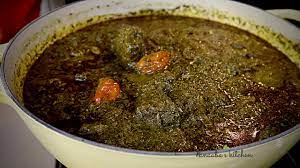

CASSAVA LEAG

This is recipe that i have never eaten, i have never seen it
Ingredients
- ground beef
- onion
- Tablespoons dried smoked fish flakes or 3 tbsp crayfish powder
Scotch bonnet or other chilli to your heat tolerance
- tomatoes
- water
- stock cubes divided Maggi
- salt
- lb. pounded cassava leaves
- medium eggplants peeled and roughly choppeds
- e3/4 cup palm oil
- 5 Tablespoon peanut butter smooth
STEPS
- Add the beef, 1 Tablespoon of onion, a quarter of the maggi stock cube, oil, 1/3 cup of water and
a pinch of salt to a pot, mix well, bring to the boil and reduce to a
simmer for about 25 mins until the beef is cooked through.
- Reserve both the beef and the cooking liquid.
- While the beef is cooking add the eggplant, the remaining onion, fish flakes, chili and 2/3 cups
of water into a high-powered blender and blend into a puree.
- CTransfer the puree into a pot, add the remaining maggi stock cubes and water, peanut butter, and palm oil.
- Mix well and over high heat bring to the boil and then reduce to a simmer for 30 mins stirring occasionally.
- Then stir in the cassava leaves, and beef liquid, bring the boil and simmer for about 30 mins.
- 10 mins before the cassava leaves are done add in the beef, season well with any needed salt and pepper and cook till done.
- Serve over steaming rice.